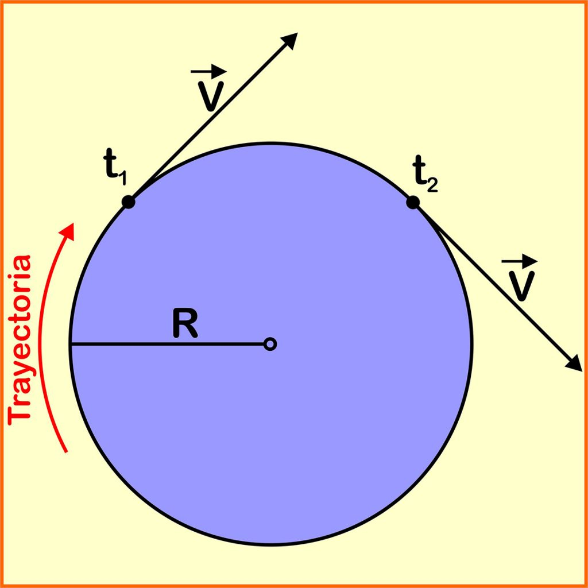
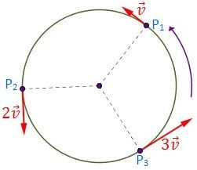

TRAYECTORIA CIRCULAR

El movimiento circular es el que recorre una partícula o cuerpo por una
circunferencia. Este movimiento tiene un eje y todos los puntos por los que pasa la
partícula se encuentran a una distancia constante (r) del eje.
Existen diferentes variables o conceptos muy importantes para explicar el movimiento circular:
Eje: Punto fijo en el centro de la circunferencia por la que gira el cuerpo.
Radio:Distancia a la que gira el punto P sobre el eje O (en nuestro caso r).
Posicion:Punto P en el que se encuentra la partícula.
Velocidad angular:Define la variación angular por unidad de tiempo (ω)
Velocidad tangencial:Es el módulo de la velocidad en cualquier punto del giro y
viene definido como el recorrido, en unidades de longitud, que describe P por unidad de tiempo (vt).
Aceleracion angular:Es el incremento de velocidad angular por unidad de tiempo (a).
Aceleracion tangencial:Se define como el incremento de velocidad lineal por unidad de tiempo (at).
Aceleracion centripeta:Componente que va dirigida hacia el centro de la circunferencia. Representa el
cambio de dirección del vector velocidad (acen).
Periodo:Tiempo T que tarda la partícula en dar una vuelta al círculo.
Frecuencia:Número de vueltas f que recorre la partícula en una unidad de tiempo.
Se expresa en ciclos/seg o hertzios.
Existen diferentes variables o conceptos muy importantes para explicar el movimiento circular:

En el dibujo se observa un ejemplo en donde la velocidad aumenta linealmente en el tiempo. Suponiendo que el tiempo en llegar del punto P1 a P2 sea una unidad de tiempo, la partícula viajacon una aceleración tangencial uniforme v, incrementándose esa cantidad en cada unidad de tiempo.
TIPOS DE TRAYECTORIA CIRCULAR
Movimiento circular uniforme (MCU)
El movimiento circular uniforme (MCU) es el movimiento que describe una partícula cuando da vueltas sobre un eje estando siempre a la misma distancia (r) del mismo y desplazándose a una velocidad constante.Movimiento circular uniformemente acelerado (MCUA)
El movimiento circular uniformemente acellerado se presenta cuando una partícula o cuerpo sólido describe una trayectoria circular aumentando o disminuyendo la velocidad de forma constante en cada unidad de tiempo. Es decir, la partícula se mueve con aceleración constante.En el dibujo se observa un ejemplo en donde la velocidad aumenta linealmente en el tiempo. Suponiendo que el tiempo en llegar del punto P1 a P2 sea una unidad de tiempo, la partícula viajacon una aceleración tangencial uniforme v, incrementándose esa cantidad en cada unidad de tiempo.
CINEMAICA Y DINAMICA
En el movimiento circular hay que tener en cuenta algunos conceptos básicos para la descripción cinemática y dinámica del mismo:
- Eje de giro: es la línea recta alrededor de la cual se realiza la rotación, este eje puede permanecer fijo o variar con el tiempo pero para cada instante concreto es el eje de la rotación (considerando en este caso una variación infinitesimal o diferencial de tiempo). El eje de giro define un punto llamado centro de giro de la trayectoria descrita (O).
- Arco: partiendo de un centro fijo o eje de giro fijo, es el espacio recorrido en la trayectoria circular o arco de radio unitario con el que se mide el desplazamiento angular. Su unidad es el radián (espacio recorrido dividido entre el radio de la trayectoria seguida, división de longitud entre longitud, adimensional por tanto).
- Velocidad angular: es la variación del desplazamiento angular por unidad de tiempo.
- Aceleración angular: es la variación de la velocidad angular por unidad de tiempo
- Momento angular: es la magnitud que en el movimiento rectilíneo equivale al momento lineal o cantidad de movimiento pero aplicada al movimiento curvilíneo, circular y/o giratorio (producto vectorial de la cantidad de movimiento por el vector posición, desde el centro de giro al punto donde se encuentra la masa puntual).
- Momento de inercia (I): es una cualidad de los cuerpos que depende de su forma y de la distribución de su masa y que resulta de multiplicar una porción concreta de la masa por la distancia que la separa al eje de giro.
- Momento de fuerza (M): o par motor es la fuerza aplicada por la distancia al eje de giro (es el equivalente a la fuerza agente del movimiento que cambia el estado de un movimiento rectilíneo).
EJEMPLO
Eligiendo el origen de coordenadas para estudiar el movimiento en el centro de la circunferencia, y conociendo su radio R, podemos expresar el vector de posición en la forma: